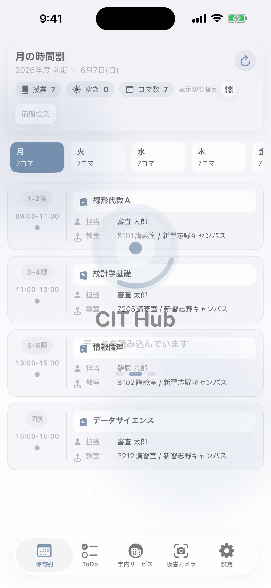
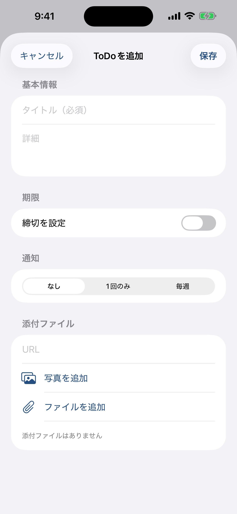
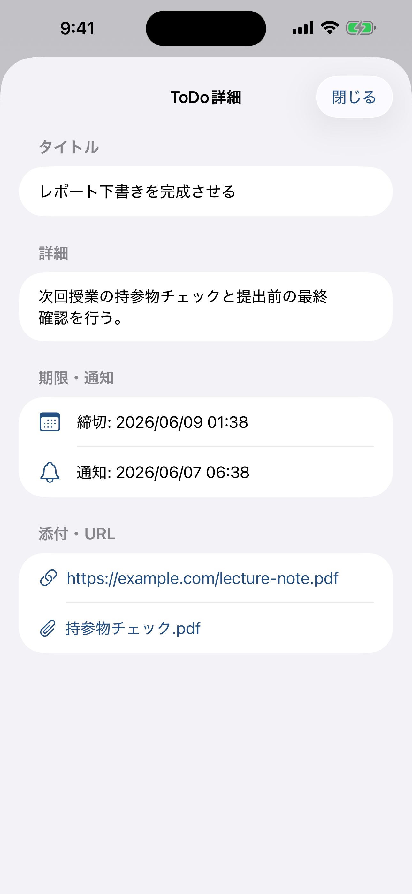
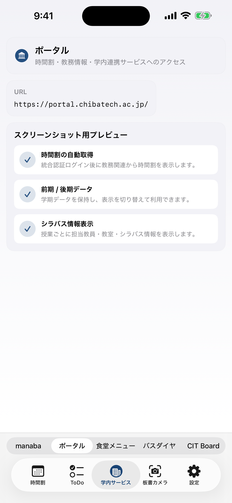
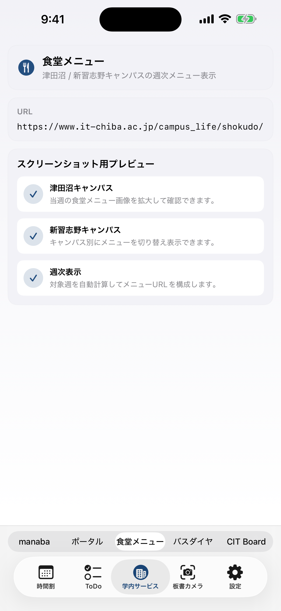
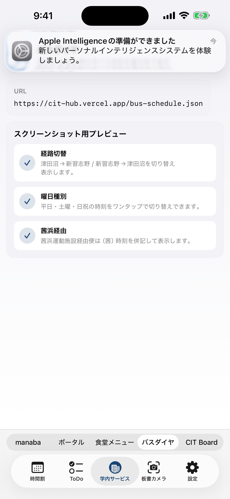
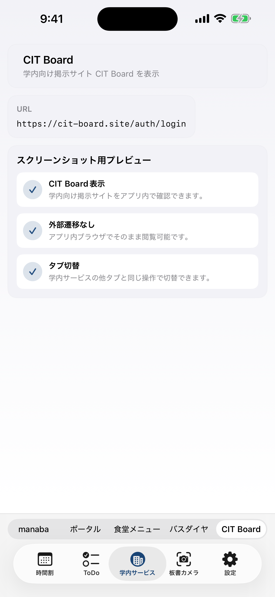
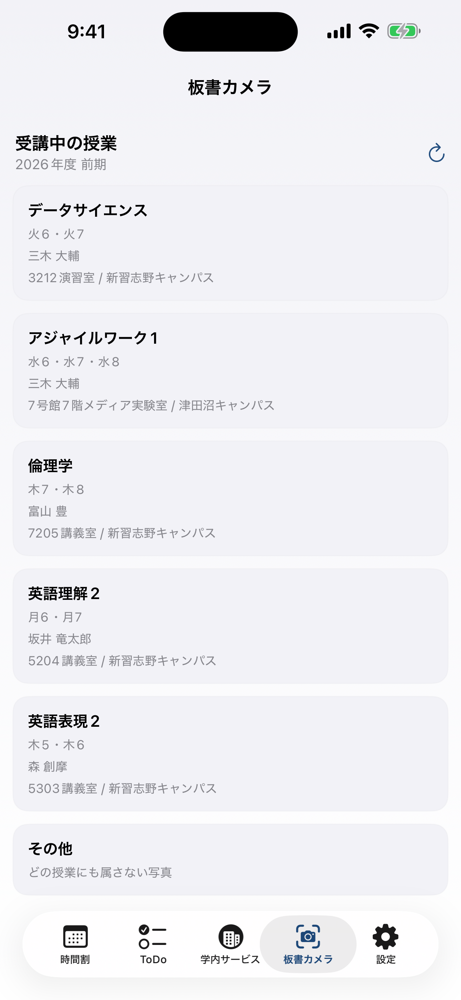
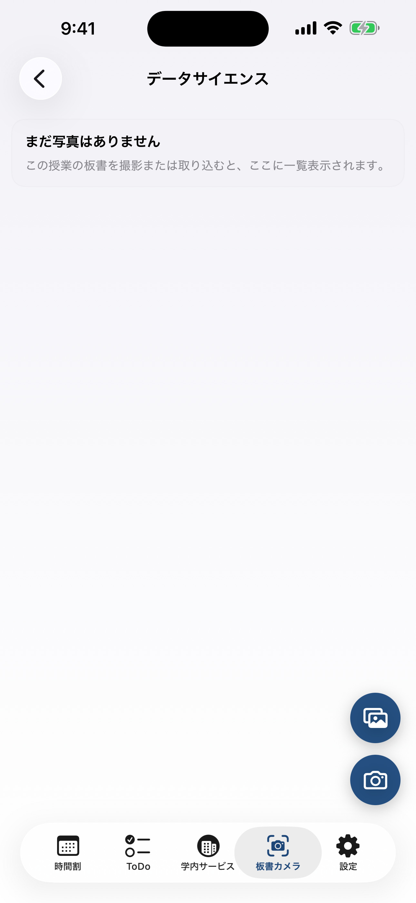

CIT HUB USER MANUAL
全機能を順番に確認できる取扱説明書
本ページは、CIT Hub の現行機能をユーザー向けに整理した説明書です。
スクリーンショットは通知バナーが写り込まない状態で再生成したものを使用しています。
CIT Hub は、千葉工業大学の学生向けに、時間割、課題管理、学内サービス、板書写真管理、通知管理をひとつにまとめたアプリです。
基本構成は 時間割 / ToDo / 学内サービス / 板書カメラ / 設定 の5タブです。
- 授業予定と授業情報の確認
- manaba課題と個人ToDoの一元管理
- ポータルや学内Webサービスの利用
- 板書写真の無音撮影と授業別整理
- 課題・授業・個人予定の通知管理
初回起動
ログイン済みでなければ学内アカウントでログインします。保存済み資格情報がある場合は自動で復帰します。
通知の許可
通知を許可すると、課題通知、授業開始前通知、個人ToDo通知を受け取れるようになります。
チュートリアル
初回チュートリアルでは各タブや主要機能の場所を順番に案内します。設定から再表示も可能です。
普段の使い方
時間割で授業確認、ToDoで課題整理、必要に応じて学内サービスや板書カメラを使います。

起動直後の画面
ToDo
manaba課題と個人ToDoの一覧、追加、編集、通知設定
学内サービス
manaba / ポータル / 食堂メニュー / バスダイヤ / CIT Board / カスタムURL
板書カメラ
授業ごとの板書写真管理、無音カメラ起動、閲覧
設定
起動設定、表示設定、通知設定、二要素認証、法的情報
ToDoタブの考え方
manabaから取得した課題と、自分で追加した個人ToDoを同じ一覧で表示します。個人ToDoは標準課題より少し濃い色味で区別します。
一覧でできること
- 課題・ToDoを1画面で確認
- 表示件数、残り日数、対象種別で絞り込み
- 自分で追加したToDoだけに絞り込むフィルタに対応
- manaba課題は従来順、個人ToDoは期限や通知日時を基準に整理
個人ToDoの並び順
- 期限あり: 期限順
- 期限なし・通知あり: 通知日時を代わりの基準に使用
- 期限なし・通知なし: 個人ToDo内で上部に表示
- 毎週通知: 期限は持たず、次回通知日時に応じて再配置
追加できる項目
- タイトル（必須）
- 詳細メモ
- 期限
- 通知方式
- 添付ファイルURL
- 添付ファイル
通知方式
- なし
- 1回のみ: 日付と時刻を指定
- 毎週: 曜日と時刻を指定
保存ルール
- 1回のみ通知は期限より後に設定不可
- 毎週通知では期限設定不可
- 期限未設定時は期限入力欄を非表示
- 期限到来後、毎週通知でない個人ToDoは自動で消去可
添付ファイルと詳細表示
- 個人ToDoをタップすると、タイトル、本文、期限、通知、添付ファイルURL、添付ファイルをプレビュー表示
- 画像やPDFなどはアプリ内プレビューに対応
- 編集ボタンから内容の更新が可能
 ToDo一覧
ToDo一覧

ToDo追加

ToDo詳細プレビュー
Campus Services
6. 学内サービス
利用できるサービス
- manaba
- ポータル
- 食堂メニュー
- バスダイヤ
- CIT Board
- カスタムURLタブ
ブラウザ操作
- 各サービスはアプリ内ブラウザで表示
- 通常のWebサービスでは戻るボタンを常時表示して利用可能
- ポータル画面だけは、サイト内に専用の戻るがある場合にアプリ側戻るを非表示
- PDFなどのファイルはアプリ内でプレビューし、右上から共有・保存可能
ポータル特有の挙動
- 多重セッションエラーを検出した場合は再読み込みで復帰を試行
- ポータル二要素認証の入力補助・設定導線があります
- 登録画面の戻るボタンがある場合はアプリ側戻るを隠します
 manaba
manaba

ポータル

食堂メニュー

バスダイヤ

CIT Board
主な機能
- 授業ごとの板書写真一覧
- 無音カメラで撮影
- 授業詳細で写真確認、拡大表示、管理
- 時間割や授業カードの導線から直接利用可能
使い方
- 時間割または板書カメラタブから授業を選ぶ
- カメラボタンを押す
- 無音カメラで撮影する
- 授業詳細で写真を見返す

授業一覧

授業詳細・写真管理
アカウント
通知センター
起動設定
- 起動時に開くタブの選択
- 学内サービスで最初に開くタブの選択
- スプラッシュ表示のON/OFF
- チュートリアル再表示
表示カスタム
- テーマカラー変更
- 学内サービスに表示するタブの選択
- 各画面の表示方針の調整
通知設定
- 課題通知のON/OFF
- 授業開始前通知のON/OFF
- 通知権限状態の確認
ポータル二要素認証
- Authenticator登録情報の設定
- QR読み取りやコード管理導線
- 設定済み状態の確認
設定画面の掲載方針
設定画面はログイン状態や審査モードの影響を受けやすく、本来の利用画面と差が出やすいため、この説明書ではスクリーンショットの掲載を省略しています。
課題通知
- 課題公開時
- 締切1週間前
- 締切3日前
- 締切24時間前
授業前通知
個人ToDo通知
保存されるデータ
- 個人ToDo
- 添付ファイル情報
- 板書写真
- 各種設定値
- ログイン情報はOSの安全な保存領域を使用
必要な権限
既知の注意点
- 学内Webサービス側の仕様変更で一部表示が変わる場合があります
- ポータル側のセッション制限により、再読み込みが発生する場合があります
- Webコンテンツの一部は提供元の都合で読み込み待ちが長くなる場合があります
スクリーンショットについて
- 通知権限を無効化した状態で再生成
- ステータスバーは 9:41 に統一
- 審査モードで本来画面を出せない箇所は画像掲載を省略
CIT Hub をインストール
iOS は App Store に遷移します。Android は配布中の最新 APK 取得先に遷移します。